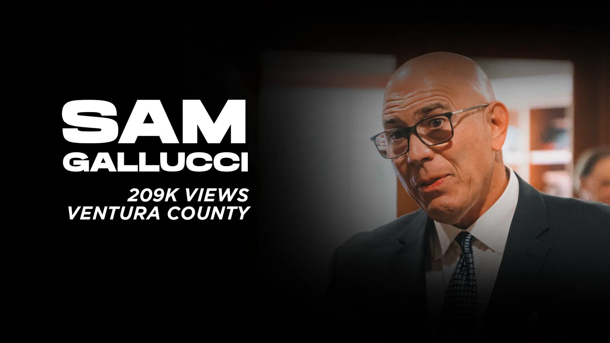
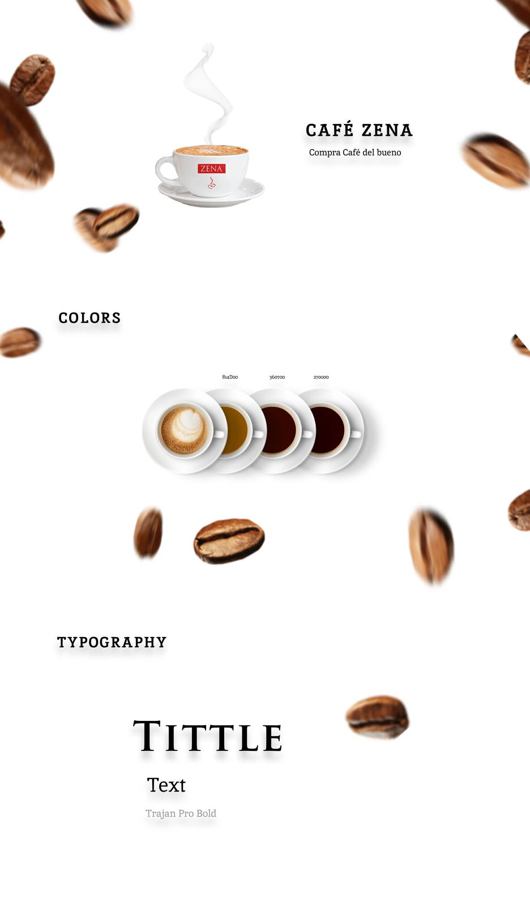
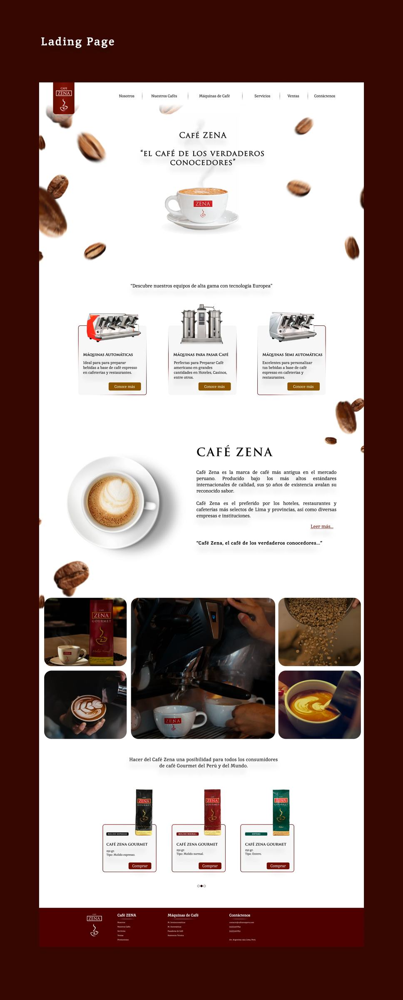
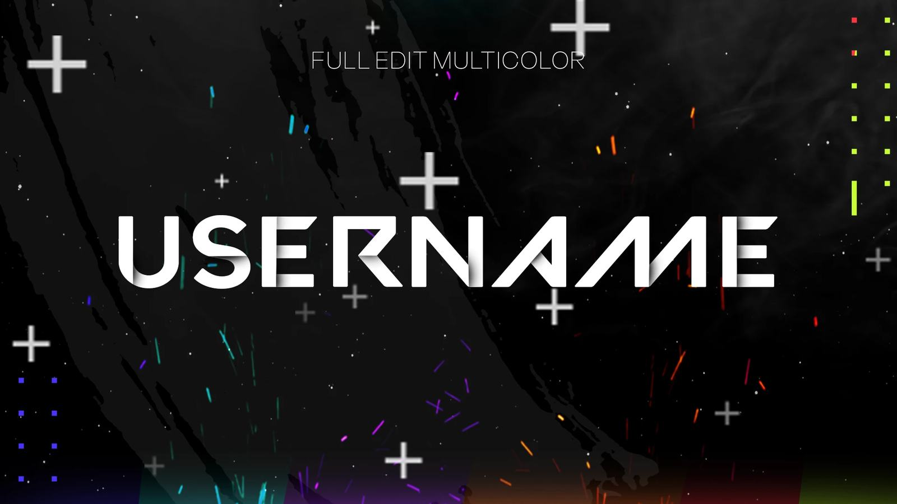
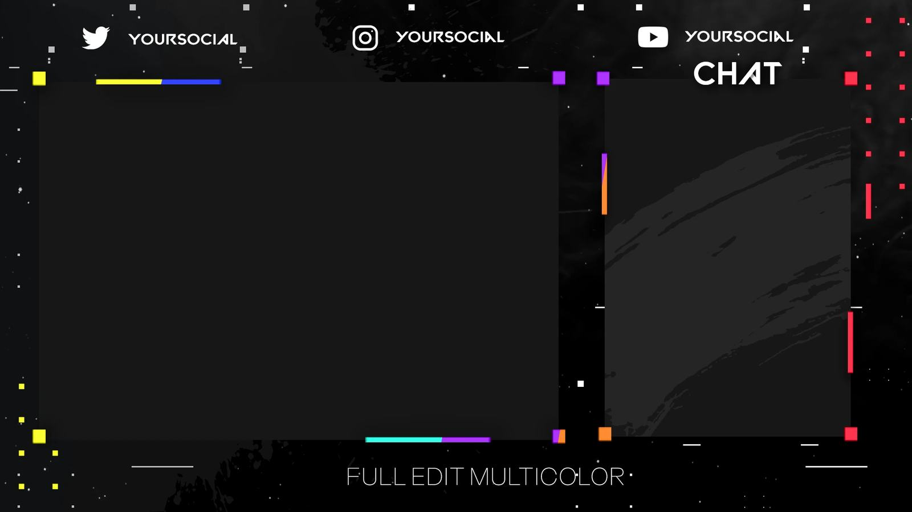

Página 01
Video político
2 proyectos900K + 436K vistas. Edición, motion y grabación.
Página 02
Fotografía en vivo
3 proyectos60 fotos en 3 conciertos
Página 03
Diseño deportivo
3 proyectos53 afiches, 6+ clubes
Página 04
Branding y redes
2 proyectos37 piezas para un Mundial
Página 05
Web y UI
1 proyectoDiseñado en Figma
Página 06
Gaming
1 proyectoOverlays listos para OBS
Sam Gallucci · 00 1600 × 900Bobby Charles · 00
1600 × 900Bobby Charles · 00 1600 × 900Bobby Charles · 01
1600 × 900Bobby Charles · 01 1254 × 1254Sam Gallucci · 01
1254 × 1254Sam Gallucci · 01
1600 × 900Bobby Charles · 03 1200 × 1204Bobby Charles · 05
1200 × 1204Bobby Charles · 05 1250 × 1254Sam Gallucci · 02
1250 × 1254Sam Gallucci · 02 1600 × 900MercyMe · 19
1600 × 900MercyMe · 19 1200 × 1600Crowder · 17
1200 × 1600Crowder · 17 1600 × 894MercyMe · 03
1600 × 894MercyMe · 03 1156 × 1600for KING & COUNTRY · 06
1156 × 1600for KING & COUNTRY · 06 1600 × 1600Crowder · 01
1600 × 1600Crowder · 01 1143 × 1600MercyMe · 07
1143 × 1600MercyMe · 07 1600 × 1539for KING & COUNTRY · 01
1600 × 1539for KING & COUNTRY · 01 1600 × 907Nahomi Martínez · 03
1600 × 907Nahomi Martínez · 03 900 × 1600Matchday's · 02
900 × 1600Matchday's · 02 1080 × 1080Luis Benites · 05
1080 × 1080Luis Benites · 05 900 × 1600Nahomi Martínez · 09
900 × 1600Nahomi Martínez · 09 900 × 1600Matchday's · 21
900 × 1600Matchday's · 21 900 × 1600Luis Benites · 01
900 × 1600Luis Benites · 01 900 × 1600Matchday's · 03
900 × 1600Matchday's · 03 900 × 1600Qatar 2022 · 04
900 × 1600Qatar 2022 · 04 1080 × 1080Physo · 02
1080 × 1080Physo · 02 1600 × 1600Qatar 2022 · 01
1600 × 1600Qatar 2022 · 01 1080 × 1080Physo · 01
1080 × 1080Physo · 01 1600 × 1600Qatar 2022 · 02
1600 × 1600Qatar 2022 · 02 1080 × 1080Physo · 03
1080 × 1080Physo · 03 1600 × 1600Zena Coffee · 00
1600 × 1600Zena Coffee · 00
936 × 1600Zena Coffee · 02 806 × 1600Zena Coffee · 01
806 × 1600Zena Coffee · 01
968 × 2400Valorant · 02 1600 × 900Valorant · 00
1600 × 900Valorant · 00
1600 × 900Valorant · 01
1600 × 900
Frame · Hola
Esteban
Frame · Currículum A4
Editor de video y videógrafo · Diseñador gráfico · Miami, FL
Esteban
Guillen
Diseñador gráfico y editor de video con base en Miami. Edito y grabo video para campañas políticas en Harris Media Group, fotografío conciertos y diseño piezas deportivas y de marca. Más de 1,3 millones de vistas en mis videos.
1,3M+vistas en video político
12proyectos destacados
196piezas publicadas
8años de experiencia
 Esteban GuillenEditor de video y videógrafo · Diseñador gráfico
Esteban GuillenEditor de video y videógrafo · Diseñador gráfico
- 2025 — hoyEditor de video y videógrafoHarris Media Group
- 2025 — hoyFotógrafo de conciertosIndependiente
- 2022 — 2024Diseñador gráfico independienteClubes, jugadores y marcas
- feb. 2022 — jul. 2022Diseñador gráficoDigitalia TEC
- ene. 2020 — jul. 2022Diseñador gráficoArturo's Burger
- mar. 2018 — jul. 2022Diseñador gráficoSoporte Total GUIMI S.A.
PerfilDe Lima a Miami, desde 2018.
Arrastra para moverte.
Doble clic en un frame para abrirlo.
Doble clic en un frame para abrirlo.
8 años de oficio →
Arrastra para moverte · Rueda o pellizco para zoom · Doble clic para abrir